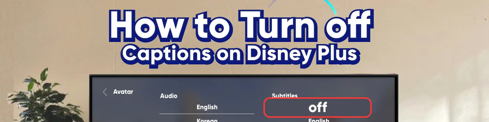
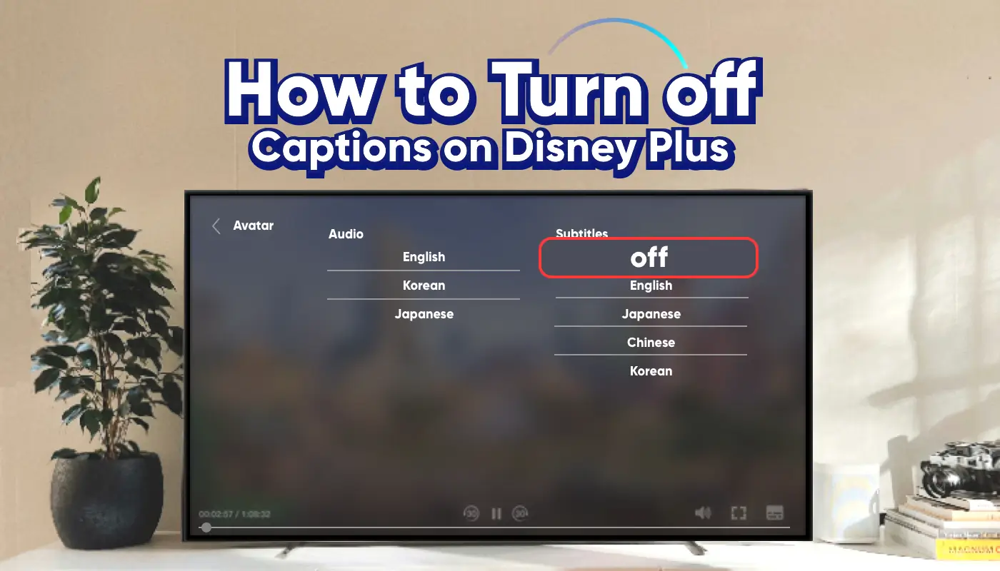

如何关闭 Disney+ 上的字幕（2025 年详细指南）
作为皮克斯的忠实粉丝和 Disney+ 的忠实用户，我发现每当我重温《心灵奇旅》、《头脑特工队》和《寻梦环游记》等电影时，自动字幕确实会扰乱我的情感联系并破坏沉浸式体验。
虽然字幕对某些人来说可能有帮助，但我们中的许多人实际上并不需要它们，尤其是在观看动画电影、纪录片或视觉震撼的大片时，你只想要清晰、不间断的视野。
你有同样的感受吗？如果是的话，本文将向你展示如何在所有设备上彻底关闭
如何关闭 Disney+ 网络版的字幕？
如果你通过电脑浏览器观看 Disney+，关闭字幕非常简单。以下是快速恢复无字幕不间断观看体验的详细步骤：
- 登录你的 Disney+ 帐户并播放任何视频。
- 将鼠标悬停在播放器上，然后单击右上角的"气泡"图标（音频和字幕设置）。
- 在弹出的设置窗口中，将字幕语言设置为"关闭"或"无"。
- 如果字幕没有立即消失，请暂停视频几秒钟然后恢复，或刷新页面。
通过遵循这些步骤，你可以有效地关闭网络版本上的字幕，并以更身临其境的方式欣赏电影。
如何关闭 Disney+ 移动应用程序上的字幕？
在 Disney+ 手机应用上关闭字幕也非常简单。以下步骤适用于 iPhone 和 Android 设备。
打开 Disney+ 应用并播放电影。点击屏幕中央调出控制栏，然后点击"对话气泡"图标（有时标记为"音频和字幕"）。在设置菜单中，找到"字幕"部分，选择"关闭"或"无"即可隐藏字幕。
值得注意的是，Disney+ 应用程序有时可能会记住你之前的字幕设置，尤其是在你更改语言或切换帐户的情况下。
如果你发现字幕再次出现，只需返回设置页面，再次手动将其关闭，然后尝试重新启动应用程序或切换到另一部电影以确认更改。
如何关闭 Disney+ 电视上的字幕
关闭 Disney+ 字幕的方法可能因智能电视品牌而异。以下是针对美国市场热门电视品牌（例如三星、LG、Roku 和 Apple TV）的具体步骤，以帮助你轻松禁用字幕。
三星智能电视
要使用三星智能电视关闭 Disney+ 上的字幕，请先打开 Disney+ 应用程序并开始播放你想要观看的内容。
然后，按下遥控器上的"向下"箭头或"设置"按钮以访问字幕设置菜单。
在此菜单中，找到"字幕"选项并选择"关闭"。保存设置后，返回视频播放，你将不再看到字幕。
LG智能电视
在 LG 智能电视上，打开 Disney+ 应用程序并开始播放视频后，按遥控器上的"向下"箭头或"设置"按钮即可访问字幕设置页面。
选择"字幕"选项并将其设置为"关闭"。然后退出设置并继续观看，你就可以享受无字幕的不间断观看体验。
Roku电视
如果你使用的是 Roku 电视，请打开 Disney+ 应用并开始播放视频。然后，按下遥控器上的"*"按钮进入设置菜单。
在设置菜单中，选择"字幕"选项并将其设置为"关闭"。设置完成后，返回视频播放，即可继续观看无字幕的视频。
苹果电视
在 Apple TV 上使用 Disney+ 时，首先打开应用并开始播放你想观看的视频。然后，使用触摸板或遥控器上的向下箭头访问字幕设置。
在设置中，选择"字幕"，并将其设置为"关闭"。完成设置后，返回视频播放，你将不再看到字幕。
按照这些步骤，你可以轻松关闭不同智能电视品牌上的 Disney+ 字幕，享受更清晰、不间断的观看体验。
如何将字幕设置为默认始终关闭？
之前，我们讨论了如何在使用 Disney+ 时手动关闭移动设备、网页和电视上的字幕。虽然这些方法很实用，但每次观看时都必须调整设置，可能有点繁琐。
其实有一种更方便的方法：你可以在账户设置中将字幕设置为默认关闭。设置完成后，每次观看时字幕都会保持关闭状态。设置步骤如下：
- 打开 Disney+ 并登录你的帐户。
- 点击右上角的个人资料图标，然后转到"编辑个人资料"。
- 选择需要修改的个人资料，点击进入。
- 找到"音频和字幕"设置。
- 将字幕语言设置为"关闭"或"无"。
- 保存设置并退出配置文件以确保更改生效。
通过这些简单的设置，你可以确保每次观看时默认关闭字幕，从而提供更清晰的观看体验。
如果字幕无法关闭怎么办？常见故障排除技巧
有时，即使你在 Disney+ 应用或网站上明确关闭了字幕，字幕仍可能顽固地保留。如果发生这种情况，请不要担心。以下是一些常见原因和相应的解决方案，可帮助你快速解决问题。
许多设备（尤其是智能电视、Roku、Apple TV 或游戏机）都有自己的"辅助功能"或"字幕"系统设置，这些设置可能默认启用字幕。这些设置可能会"覆盖"Disney+ 应用中的字幕偏好设置。
👉
如果你在个人资料中更改了字幕设置但未单击"保存"，或者在进行更改后立即切换设备，则系统可能无法正确同步设置。
👉
有时，Disney+ 可能会缓存之前的字幕设置，导致即使你关闭字幕后字幕仍然保持打开状态。
👉
当你切换播放语言或开始观看新电影时，Disney+ 可能会自动启用与所选语言相匹配的字幕。
👉
想要以更低的价格订阅 Disney+ 吗？
想以更低价格订阅 Disney+ 吗？我有个好办法。
作为皮克斯的忠实粉丝，我每天都会用 Disney+，现在经常性的付费开始让我有点难以承受。所以我找到了一些账号共享平台。用了几年之后，我没遇到什么大问题，还省了不少钱。
如果你也为Disney+的高昂订阅费用而苦恼，我推荐奈飞小铺账号共享平台。他们与专业供应商合作，提供比官方价格更实惠的价格，而且平台上的 Disney+账号安全稳定。
最重要的是，每当我在使用过程中遇到任何问题，奈飞小铺 的客服团队总是能快速响应并帮助解决问题，让我非常放心。
🎉 立即访问 奈飞小铺 并享受更实惠的 Disney+ 订阅！
常问问题
如何关闭 Disney Plus 上的字幕？
要关闭 Disney Plus 的字幕，请开始播放视频，然后点击屏幕（移动设备）或使用遥控器（电视）。然后，打开"音频和字幕"菜单，选择"关闭"或"无"字幕。如果字幕没有立即消失，请暂停视频几秒钟后再继续播放。
为什么 Disney Plus 上一直有字幕？
由于已保存的个人资料设置、设备级辅助功能或之前的语言选择，Disney Plus 上可能会继续显示字幕。请尝试在"音频和字幕"菜单中关闭字幕，并更新你的个人资料设置，以防止字幕自动重新打开。
如何关闭 Disney Plus Roku 上的字幕轨道？
在 Disney Plus 上，播放视频并按下遥控器上的 * 按钮。在出现的菜单中，前往"字幕"并选择"关闭"。你也可以在播放过程中选择"音频和字幕"并关闭字幕来禁用字幕。